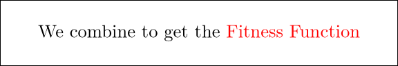
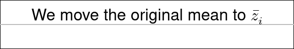
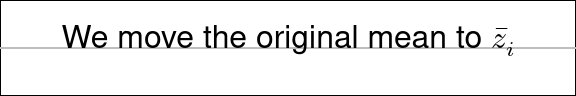
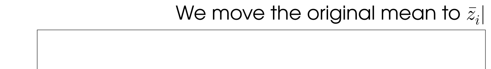
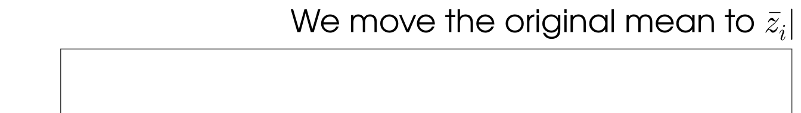
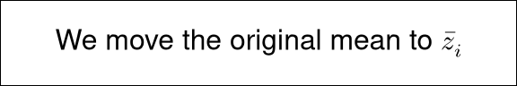
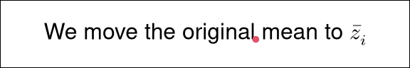
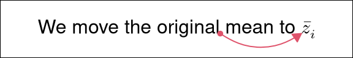
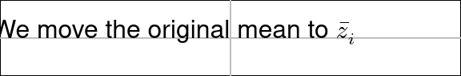
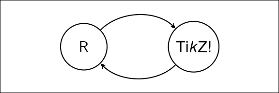

1 Introduction
Text labels, titles, and annotations are essential components of any data visualization. Viewers focus a lot of their attention on text (Borkin et al. 2016), text is the most effective way to communicate some types of information (Hearst 2023), and the message obtained from a data visualization can be heavily influenced by the text on a plot (Kong et al. 2018).
R provides relatively flexible tools for adding text labels to plots.
For example, in the graphics package, we can specify an
overall plot title and axis titles via the main,
xlab, and ylab arguments to the plot() function
and we can add text at arbitrary locations on the plot with the text()
and mtext() functions.
Unfortunately, these core tools for drawing text are quite limited in terms of the formatting of the text. For example, there is no facility for emphasizing an individual word using a bold or italic face within a text label.
The ggtext (Wilke and Wiernik 2022a) and gridtext (Wilke and Wiernik 2022b) packages greatly improved the situation by allowing text labels to include a small subset of markdown and HTML (plus CSS). This allowed, for example, changes in font face and color within text labels.
More recently, the marquee package (Pedersen and Mitáš 2025) improved the situation a great deal further by providing full support for markdown within text labels. This made it possible to lay out more complex arrangements of text and even graphical content within text labels.
However, despite these advances, there are still some text formatting tasks that remain out of reach. For example, Figure 1 shows a plot with a text annotation in the top-right corner that contains a combination of features that cannot be produced using the available text-drawing tools.
Figure 1: A plot with a text annotation in the top-right corner that contains several typesetting challenges: in-line mathematical expressions like \(\bar z_i\); changes in color so that the last two words match the colour of the thicker line in the plot; and automated line-breaks with full justification and hyphenation.
The annotation in Figure 1 may not appear to be particularly special nor particularly complicated at first glance, but it harbors several important details:
The text is a mixture of plain text and mathematical expressions (like \(\bar{z}_i\)). Furthermore, the mathematical expressions use a different font (Latin Modern) than the plain text (TeX Gyre Adventor) and the mixture is broken across multiple lines.
The R graphics system can draw mathematical expressions (Murrell and Ihaka 2000) and that includes a mixture of plain text and mathematical expressions. Furthermore, the R graphics system uses a separate symbol font for mathematical expressions compared to plain text. However, further changes in font within the plain text are not possible and line breaks are not supported. There is also the problem that the typesetting of mathematical expressions in R graphics is not of a very high quality.
The text is not all the same color; the final two words (but not the full stop) are red. Furthermore, the final two words are bold; they have a different font face compared to the rest of the text.
The R graphics system can only draw a character value with a single color and a single font face. The gridtext and ggtext packages make it possible to change color within a character value, but they do not allow a mixture of character values and R mathematical expressions. Furthermore, they do not provide support for MathML
<math>tags.The text is broken over multiple lines. Furthermore, the text is fully justified (not ragged-left or ragged-right justified) and one word has been split across lines and hyphenated. Although it is not obvious from the plot itself, the line breaks were also automatically generated to fit the text into a fixed width.
The R graphics system can draw a character value across multiple lines, but only if explicit newlines are embedded in the character value (i.e., the line breaks are manual). The base function
strwrap()can be used to break lines, but it is only designed for monospaced terminal output and ragged-right justification. The gridtext and ggtext packages can calculate simple automated line breaks, but they will not break a word across lines (or hyphenate) and they cannot fully justify the resulting text. The marquee package can automate line breaks and fully justify text, but it cannot hyphenate nor can it produce mathematical expressions.
The features outlined above are all examples of typesetting; determining an arrangement of individual characters and symbols (glyphs) that could be as simple as placing one character after another (from left to right), but could also be as complex as arranging mathematical symbols, splitting text into multiple columns, or writing text vertically from top to bottom.
From R 4.3.0, it has been
possible to draw text from a set of typeset glyphs using the
functions grDevices::glyphInfo() and grid::grid.glyph()
(Murrell et al. 2023). This facility
offers the promise of being able to render arbitrary typeset text
in R. However, it
presupposes that we are able to generate a set of typeset glyphs.
The marquee package provides an example of a package that can generate typeset glyphs. It is capable of converting markdown input into a set of glyphs and their positions, which are then rendered in R.
This article describes the xdvir package, which is another example
of a package that can generate typeset glyphs.
In this case, the input is LaTeX, a TeX engine processes the
LaTeX source to create DVI output, which is essentially
a set of glyphs and their positions,
and then xdvir reads the DVI output and
renders the result in R.1
The benefit of the xdvir package is that it provides access to the
typesetting capabilities of LaTeX, which includes hyphenation,
fully justified text, mixtures of plain text and mathematical expressions—all
of the features demonstrated in Figure 1—and much more.
The next section describes the basic usage of the xdvir package.
This is followed by a section that breaks down the
design of the xdvir package to show the steps that are
required to render LaTeX output in R.
Subsequent sections explore several of the complexities
that can arise with rendering LaTeX text in R graphics and
some of the solutions that
the xdvir package provides.
The article ends with several extended examples of rendering LaTeX text in R.
2 LaTeX text labels in R
The simplest way to draw LaTeX text with the xdvir package
is to call the grid.latex() function. The first argument to
this function is a character value, which is interpreted as
a fragment of LaTeX code.
For example, the following code draws a text label that contains
a subset of the larger annotation from
Figure 1. We use just a subset here in order
to keep the code readable.
Because LaTeX code tends to contain
a large number of backslashes, the code below uses the r"(...)"
syntax for raw character constants, so that we do not have to
escape each backslash with a double backslash.
The resulting image is shown below the code.
Although it is not immediately obvious from that image,
the text, or rather the glyphs, in the image are rendered by R.
simpleTeX <- r"(We move the original mean to $\bar z_i$)"grid.latex(simpleTeX)
It is possible to produce something similar to this result using
the plotmath feature in R, as shown in the following code (and the image
below the code). However, this demonstrates that
one advantage of using xdvir, even for a simple
piece of text like this, is the superior quality of the LaTeX
fonts and typesetting for mathematical expressions.
plotmath <- expression("We move the original mean to "*bar(italic(z))[i])grid.text(plotmath)
Another immediate benefit of xdvir is that we can automatically fit
the text within a specified width.
For example, the following code draws the LaTeX fragment tex
again, but this time forces it to fit within a column that is half
the width of the image.
grid.latex(simpleTeX, width=.5)As the function name grid.latex() suggests, that function
produces low-level
drawing in the grid package graphics system.
The text is just drawn relative to the current grid viewport,
wherever that may be on the page.
While this is extremely flexible, it is more likely that
we want to combine and coordinate the text with a high-level plot
of some sort, like the annotation in Figure 1.
There are various ways that low-level grid drawing can be combined
with a high-level plot, but we will leave those demonstrations to
later sections.
Instead, for now, we will demonstrate a more common scenario:
drawing LaTeX text labels on a ggplot2 plot (Wickham 2016).
For this purpose, the xdvir package provides the
element_latex() function. This allows us to specify a LaTeX fragment
as a plot label and then we can indicate the special nature of the label
via the ggplot2::theme() function.
For example, the following code uses the same LaTeX fragment
from the example above as the title of a ggplot2 plot.
The resulting plot is shown in Figure 2.
One detail about this result is that the text in this title is larger
than the text drawn by the call to grid.latex() above,
even though exactly the same TeX fragment is being drawn.
A closer inspection reveals that the font is also different.
These differences reflect the fact that grid.latex() and element_latex()
respect the graphical parameter settings—font families and font sizes—that
are in effect when the LaTeX fragment is drawn. In Figure
2 that means respecting the theme settings
of the ggplot2 plot.
The ggIntro object in the code below
contains a description of the main ggplot2
plot from Figure
1.
The code for generating
ggIntro is not shown in order to keep the code below readable,
but it is available in the supplementary materials for this article.
ggIntro +
labs(title=simpleTeX) +
theme(plot.title=element_latex())
Figure 2: The ggplot2 plot from Figure 1, without the text annotation, but with a title that was specified using a LaTeX fragment and the function element_latex().
The xdvir package also provides a geom_latex() function for
drawing text labels, similar to the standard ggplot2::geom_text() function.
The values specified for the
label aesthetic for geom_latex() are treated as fragments of LaTeX
code.
For example, Figure 3
shows a plot with a set of red points
and a set of red labels, one for each point.
The points are drawn using the standard ggplot::geom_point() function,
but the labels are drawn using geom_latex() from the xdvir package.
The red labels for the red points in Figure 3
are small LaTeX fragments that each describe
a simple LaTeX mathematical expression.
The data set used for the red points and labels is stored
in a data frame called means and the LaTeX fragments are
in a column called label, as shown below.
means$label[1] "$\\bar x_1$" "$\\bar x_2$" "$\\bar x_3$" "$\\bar x_4$"
[5] "$\\bar x_5$"The following code draws the plot in Figure 3.
A call to ggplot2::geom_point() draws the red points and a call
to geom_latex() draws the red labels.
The ggGeom object in the code below describes the
main plot, which consists of gray dots, horizontal and vertical lines,
and y-axis labels.
The code for generating
ggGeom is not shown in order to keep the code below readable,
but it is available in the supplementary materials for this article.
ggGeom +
geom_point(aes(x, sample), data=means, colour=2, size=4) +
geom_latex(aes(x, sample, label=label), data=means,
size=6, vjust=-.4, colour=2)
Figure 3: A ggplot2 plot with text labels specified as LaTeX fragments and drawn using the geom_latex() function.
3 Under the hood
The previous section showed that simple usage of the xdvir package
only requires specifying a LaTeX fragment as the text to draw.
For example, several examples used the LaTeX fragment shown below.
simpleTeX[1] "We move the original mean to $\\bar z_i$"The grid.latex() function has three tasks to perform in order to
draw that LaTeX fragment in R:
- Authoring:
-
The LaTeX fragment has to be turned into a complete LaTeX document.
-
The
author()function in thexdvirpackage allows us to perform this step separately. For example, the following code takes the LaTeX fragmentsimpleTeXand produces a complete LaTeX document,simpleDoc, that is ready to typeset.
simpleDoc <- author(simpleTeX)simpleDoc%% R package xdvir_0.1.3; engine name: XeTeX; engine version: XeTeX 3.141592653-2.6-
\documentclass[varwidth]{standalone}
\usepackage{unicode-math}
\begin{document}
We move the original mean to $\bar z_i$
\end{document}- Typesetting:
-
The LaTeX document has to be typeset to produce a set of glyphs and their positions.
-
The
typeset()function in thexdvirpackage allows us to perform this step separately. For example, the following code takes the LaTeX documentsimpleDocand produces a"DVI"object,simpleDVI, that contains instructions specifying the fonts to use (lines that containx_fnt_defandfnt_numin the output below), the glyphs to use from those fonts (lines that containx_glyphin the output below), and where to draw those glyphs (lines that containdownandrightandx_glyph). The output shown below has been trimmed to save space and to make it easier to read.
simpleDVI <- typeset(simpleDoc)
simpleDVIpre version=7, num=25400000, den=473628672, mag=1000,
comment=R package xdvir_0.1.3; engine name: XeTeX; engine version: XeTe
bop counters=1 0 0 0 0 0 0 0 0 0, p=-1
xxx1 k=47
x=pdf:pagesize width 143.26802pt height 9.48027pt
down3 a=-4114988
...
push
x_fnt_def fontnum=40, ptsize=655360
fontname=/home/mitchell/.TinyTeX/texmf-dist/fonts/opentype/public/lm/lm
fnt_num_40
x_glyph id=113, x=0, y=0
x_glyph id=50, x=619315, y=0
w3 b=218235
x_glyph id=75, x=0, y=0
...- Rendering:
-
The result of the typesetting step has to be drawn in R.
-
The
render()function in thexdvirpackage allows us to perform this step separately. For example, the code below renders the typesetting information from thesimpleDVIobject in R. The resulting image is shown below the code.
render(simpleDVI)One detail about the output above is that the rendered text from this
render() call is
smaller and in a different font compared to the example from
the previous section,
which was produced by a grid.latex() call.
This reflects the fact that grid.latex(),
in the authoring step, respects the font family and
font size that are in effect when the text is rendered.
By contrast, the render() call is drawing typeset information
from a LaTeX document that just makes use of the default LaTeX font,
Computer Modern (or to be more precise, a modernized version called
Latin Modern) at 10pt.
4 LaTeX packages
The code examples so far have dealt with relatively simple fragments of LaTeX code that consist of just text plus some simple mathematical expressions. While this is already useful, it barely scratches the surface of what is possible with LaTeX code.
Many additional effects can be obtained with LaTeX code by loading
LaTeX packages. As a simple example, changing the color of text
requires loading the LaTeX package xcolor.
These LaTeX packages can be loaded using the packages argument of the
grid.latex() function (or the element_latex() function
or the geom_latex() function).
For example, the following code draws text with the last two
words in red.
colourTeX <- r"(We combine to get the \textcolor{red}{Fitness Function})"grid.latex(colourTeX, packages="xcolor")The argument packages="xcolor" is used in the authoring step to load the
package in the LaTeX document preamble. This is demonstrated below
with an explicit call to the author() function. We can see that
\usepackage{xcolor} has been added to the LaTeX document.
colourDoc <- author(colourTeX, packages="xcolor")colourDoc%% R package xdvir_0.1.3; engine name: XeTeX; engine version: XeTeX 3.141592653-2.6-
\documentclass[varwidth]{standalone}
\usepackage{unicode-math}
\usepackage{xcolor}
\begin{document}
We combine to get the \textcolor{red}{Fitness Function}
\end{document}This in turn affects the typesetting step: without the xcolor package, the
LaTeX command \textcolor would not be recognized;
with the xcolor package,
the \textcolor command produces instructions to change color
in the "DVI" output. This is demonstrated below with an
explicit call to the typeset() function. An example of the color-change
instructions is the line containing color push in the output below the code.
colourDVI <- typeset(colourDoc)
colourDVIpre version=7, num=25400000, den=473628672, mag=1000,
comment=R package xdvir_0.1.3; engine name: XeTeX; engine version: XeTe
bop counters=1 0 0 0 0 0 0 0 0 0, p=-1
...
x_fnt_def fontnum=40, ptsize=655360
fontname=/home/mitchell/.TinyTeX/texmf-dist/fonts/opentype/public/lm/lm
fnt_num_40
x_glyph id=113, x=0, y=0
x_glyph id=50, x=619315, y=0
...
xxx1 k=20
x=color push rgb 1 0 0
x_glyph id=54, x=0, y=0
x_glyph id=66, x=427950, y=0
...The argument packages="xcolor" is also
used in the rendering step because, without it,
the rendering would not take any notice of the instructions to
change color. This is demonstrated below with an explicit
call to the render() function. The resulting image differs from
the previous one because it uses the default LaTeX font, but we can see the
same change in color for the last two words.
render(colourDVI, packages="xcolor")
There are several LaTeX packages with predefined support in the
xdvir package, including
xcolor for changes in color and fontspec for changes in font.
Support can be added for other LaTeX packages with the
LaTeXpackage() function. We will see other predefined packages
and an example of defining a new LaTeX
package in later sections.
5 Justifying text
By default, the LaTeX text drawn by grid.latex()
is centered upon a specified location.
For example, the following code draws the simpleTeX
fragment vertically centered
at a location half-way up the image (as indicated by the gray line).
grid.latex(simpleTeX, y=.5)We can specify a different justification using the vjust argument.
For example, the following code draws the same simpleTeX fragment
at the same location, but with a bottom-justification.
Notice that the bottom of the text is based on the bounding box
of the text, so the bottom of the text is the bottom of the subscript “i”.
grid.latex(simpleTeX, y=.5, vjust="bottom")
In some situations it will be much more useful to justify text relative to the text baseline, as shown by the following code.
grid.latex(simpleTeX, y=.5, vjust="baseline")
The xdvir package has a very simple algorithm for determining the text
baseline, but there is also predefined support for the LaTeX package preview,
which produces a more reliable baseline. That baseline can be accessed,
assuming the preview package is loaded, by
specifying vjust="preview-baseline".
There is also an hjust argument for horizontal justification.
This accepts the standard values, "left", "centre", and "right", but
also accepts "bbleft", "bbcentre", and "bbright".
The latter three are based on a bounding box around the actual ink
that is drawn, which does not include space before or after glyphs
(left-side bearing and right-side bearing).
The following code provides a demonstration of the difference
by drawing the simple LaTeX fragment from previous examples as the title
of a ggplot2 plot.
We add a (mathematical) vertical bar to the end of the LaTeX fragment
and draw the title larger than normal and justify the text against the
right side of the plot region, using "right" justification first and
then using "bbright" justification.
The output below the code just shows the very top of the plot in order to save
space.
rightBearingTeX <- paste0(simpleTeX, "$|$")ggIntro +
labs(title=rightBearingTeX) +
theme(plot.title=element_latex(size=20, hjust="right"))
ggIntro +
labs(title=rightBearingTeX) +
theme(plot.title=element_latex(size=20, hjust="bbright"))
The difference between the two plots is that the second vertical bar is precisely aligned with the right edge of the plot region whereas the first vertical bar is slightly to the left of the right edge of the plot region (because of the right-side bearing of the vertical bar glyph). This is a very small detail, but it is something that can be visually jarring if we are trying to align components of a plot in order to produce a clean design. This fine level of control is exactly the sort of precision that we are seeking by working with LaTeX typesetting.
6 Integrating text
Justifying LaTeX text is a simple example of a larger problem: integrating LaTeX text. For example, the text annotation in Figure 1 is integrated with the plot in the sense that it is positioned relative to the plot region. In fact, closer inspection reveals that the text annotation is carefully top-justified with the maximum y-value of the red line and right-justified with the maximum x-value of the red line.
Put in terms of integration rather than justification, the text annotation in Figure 1 is integrated with the plot because the LaTeX text is drawn at a location that is coordinated with the location of other R graphics drawing in the plot.
Another example of integration, that reverses the roles, is coordinating
other R graphics drawing with the location of LaTeX text.
The following code provides a simple example.
The LaTeX fragment is the simple one from previous examples with
two additions: there are \zsavepos commands to mark specific locations
within the text and associate them with labels ("a" and "b");
and there are \Rzmark commands to export those
locations for R to see.
zrefTeX <- r"(We move the original\zsavepos{a} mean to \zsavepos{b}$\bar z_i$
\Rzmark{a}\Rzmark{b})"If we render this LaTeX fragment, we just get the familiar output.
The commands that we added to the LaTeX fragment
are based on the LaTeX package zref,
so we must load that package.
grid.latex(zrefTeX, packages="zref")
However, we can now access the special locations in the LaTeX
output using the
getMark() function from the xdvir package.
For example, the following code accesses location "a", which is just after
the word “original”, and draws
a small red dot at that location.
a <- getMark("a")
grid.circle(a$devx, a$devy, r=unit(.5, "mm"), gp=gpar(col=2, fill=2))
The following code accesses location "b", which is just before the letter “z”,
and draws a curved arrow
from "a" to "b".

The exported locations also produce “anchors” that we can use to justify
LaTeX text. For example, the following code
draws the simple LaTeX fragment with position "a" at
the center of the image (which is indicated by gray lines).
grid.latex(zrefTeX, packages="zref", hjust="a", vjust="a")
Figure 4 provides a more realistic demonstration.
This figure shows the plot from Figure 1
with a line added to visually connect the thick red line with
the red part of the LaTeX annotation.
The code for this plot is not shown for reasons of space, but it
makes use of the same basic idea as the code above by saving locations within
the LaTeX output and then accessing them with the getMark() function.
The full code is available in the supplementary materials for this article.
Figure 4: The ggplot2 plot from Figure 1, including the LaTeX annotation, with a line added relative to marked locations within the LaTeX annotation (and relative to the thick red line).
7 LaTeX graphics
The examples so far have demonstrated using LaTeX code to describe
text labels, combined with using R to draw general
graphics—lines and circles and so on.
It is also possible to use LaTeX to draw general graphics.
In particular, the LaTeX package TikZ provides very powerful and flexible
graphics facilities.
The xdvir package provides support for the LaTeX package TikZ,
so we are able to render TikZ graphics in R.
For example, the following LaTeX code describes a TikZ picture consisting of two text labels enclosed within circles, with arrows connecting the circles.
tikzTeX <- r"(%
\path (0, 0) node[circle,minimum size=.5in,draw,thick] (x) {\sffamily{R}}
(3, 0) node[circle,minimum size=.5in,draw,thick] (y) {Ti\textit{k}Z!};
\draw[-{stealth},thick] (x) .. controls (1, 1) and (2, 1).. (y);
\draw[-{stealth},thick] (y) .. controls (2, -1) and (1, -1) .. (x);)"The following code draws this TikZ picture in R.
The argument
packages="tikzPicture" is necessary to ensure that the TikZ package
is loaded in the authoring step, that TikZ output is produced in the
typesetting step, and that R takes notice of the TikZ
output in the rendering step.
grid.latex(tikzTeX, packages="tikzPicture")
The label on the x-axis of Figure 3 is another simple TikZ picture that uses TikZ commands to draw the Greek letter mu within a circle. This example is not completely trivial because it uses the LaTeX concept of “phantom” text to make the circle large enough to fit a capital “M” even though no such character is drawn. This is another example of the detailed typesetting capabilities that access to LaTeX provides.
muDot <- r"(%
\begin{tikzpicture}
\node[draw,circle,thick,inner sep=0.5mm]{\vphantom{M}$\mu$};
\end{tikzpicture})"The LaTeX code this time includes an explicit \begin{tikzpicture}
and \end{tikzpicture}. Those commands were implicitly added in the previous
example because we specified packages="tikzPicture".
This time, we have explicitly provided the commands, so we
just specify packages="tikz".
grid.latex(muDot, packages="tikz")
We will see a more complex example of TikZ output in a later section. Figure 5 is also a TikZ picture that has been rendered in R.
8 Programmatic generation of LaTeX
One obstacle to adopting the xdvir package is that it
assumes that the user knows how to create a LaTeX fragment
(i.e., write LaTeX code). While the xdvir package provides
some assistance so that the user is only required to write a LaTeX
fragment rather than a complete LaTeX document, LaTeX fragments
for text labels tend to be more complex than
plain text labels, thanks to the additional markup that is required.
However, LaTeX code is still
just text. This means that all of the text-generating tools in R
are available to help with authoring LaTeX fragments.
For example, the labels used to render text data symbols in
Figure 3 could be generated via a simple call to the paste0() function,
as shown below.
paste0("$\\bar x_", 1:5, "$")[1] "$\\bar x_1$" "$\\bar x_2$" "$\\bar x_3$" "$\\bar x_4$"
[5] "$\\bar x_5$"There are also packages that can generate larger fragments of LaTeX code. For example, there are packages like xtable (Dahl et al. 2019) and latexpdf (Bergsma 2023) for generating LaTeX tables and the rmarkdown package (Xie et al. 2018) can generate LaTeX documents from Markdown input. The Literate Programming section of the Reproducible Research CRAN Task View provides a more comprehensive list of relevant R packages. The texPreview package (Sidi and Polhamus 2024) may also be helpful for previewing the output of LaTeX code within an R session.
Some of these tools can be particularly useful for generating larger chunks of LaTeX code, although the LaTeX code that is produced may consist of entire documents rather than just LaTeX fragments. The next section describes how we can cope with that situation.
9 Customization and debugging
Most of the examples in this article take a fragment of LaTeX code
and pass it to the grid.latex() function, which performs an
authoring step, a typesetting step, and a rendering step.
We saw in a previous section that there are functions
author(), typeset(), and render()
that allow us to perform these steps separately (see Figure 5).
This provides more control over the individual steps and allows
us to inspect the results of the individual steps, which can be
useful for debugging.
In this section, we explore further options for controlling the
authoring, typesetting, and rendering steps.
Figure 5: The design of the xdvir package.
The author() function transforms a LaTeX fragment into a
complete LaTeX document. Although there are arguments to the author()
function that allow some control over that transformation,
e.g., the packages argument, it does not allow full control
over the composition of the LaTeX document.
Fortunately, a LaTeX document within R is essentially just a character vector,
so another way to author a LaTeX document is to create an external text file
and read that into R. This allows complete control over the content
of the LaTeX document.
Another possibility is that we want to use a LaTeX document that
we did not create, for example, if we write Markdown code and
convert it to LaTeX code.
The typeset() function transforms a LaTeX document into a "DVI" object
that contains a set of typeset glyphs. There is limited control over this
process as well, with only the engine argument allowing us to select between
"xetex" or "luatex". Again, one way to
obtain greater control is to
perform this step outside of R by running
a TeX engine, e.g., xelatex, on an external text file to produce a DVI
file. The xdvir package provides the readDVI() function
to read external DVI files into R and these can then be passed to
the render() function for drawing.
One important caveat is that both
a "LaTeXdocument" object that is produced by
the author() function and a "DVI" object that is produced by the
typeset() function contain information about how they were created,
for example, the TeX engine that was specified and the LaTeX
packages that were loaded.
The typeset() function checks this information and warns if we ask
to typeset a "LaTeXdocument" that was produced for a different TeX engine.
Similarly, the render() function, which also has an engine argument,
checks and warns if we ask to render a
"DVI" object that was produced using a different TeX engine.
External LaTeX documents and DVI files do not (explicitly) contain this
information so it is up to the user to ensure that the TeX engine,
and any LaTeX packages, are consistent with the arguments provided
to the functions typeset() and render().
In some situations, even with the appropriate level of care,
it will be impossible to avoid warnings.
10 Example 1
This section demonstrates a more complete example of rendering LaTeX text within a plot. The plot, shown in Figure 6, provides a clear example of the more advanced typesetting capabilities of LaTeX; the text annotation in the top-left corner of the plot is not only typeset into two columns, but both columns are fully justified and feature several examples of hyphenation.
This example also demonstrates one way to integrate a
grid.latex() call with a plot that was drawn using functions
from the graphics package. We will also see a simple
demonstration of the LaTeXpackage() function to allow use of
a LaTeX package that has no predefined support in xdvir.
Figure 6: A plot with a two-column text annotation. This plot is an adaptation of Figure 4.1 from Thomas Rahlf’s book “Data Visualisation with R” (Rahlf 2017).
The details of the code that produces the main plot—everything except
the two columns of text in the top-left corner—are not relevant
to this article so we perform this drawing
just with a call to a rahlfPlot() function that is defined in the
supplementary material for the article. The result is shown in
Figure 7.
rahlfPlot()
Figure 7: The main plot from Figure 6 without the two columns of text annotation. This plot is drawn using functions from the graphics package.
Because the main plot is drawn using functions from the graphics package,
in order to integrate the output from grid.latex() with the plot,
we need to convert the plot to an equivalent drawing that uses
functions from the grid package.
This can be achieved with the grid.echo() function from the
gridGraphics package (Murrell and Wen 2020), as shown below.
We want to integrate
the LaTeX text with the main plot. In particular, we want
the top of the text to be aligned with the value 14,000 on the y-scale
of the plot. There is also a 1cm gap between the left of the text
and the y-axis line.
In order to achieve this, we can navigate to the grid viewport
that corresponds to the main plot region, which also has scales
that match the plot scales.
The naming scheme for the grid viewports that grid.echo()
generates is described in Murrell (2015).
downViewport("graphics-window-1-1")We are now ready to render the LaTeX text within the plot.
The LaTeX code for this example is shown below.
This is a larger LaTeX fragment than we have previously seen,
but more importantly it contains a larger number of LaTeX commands
to control the typesetting of the text.
For example, we control the font family with a \setmainfont command,
we control font size and vertical line spacing
with a \fontsize command,
we control the overall width of the text using a minipage
environment,
we set the number of columns using a multicol environment,
and we control the horizontal spacing between columns with
a \setlength command.
\setmainfont{Lato-Light}
\fontsize{12pt}{17pt}\selectfont
\setlength{\columnsep}{1cm}
\begin{minipage}[t]{16.25cm}
\begin{multicols}{2}
From a general and economic policy perspective, the entire period from
1820 to 1930 can be described as a relatively liberal period. With the
"Pacific War", as a result of which the nitrate mines were awarded to
Chile, the economy experienced a profound upswing. The period from
1940 to 1973 is generally seen as a phase in which the government
increasingly intervened in the economy and Chile was isolated
internationally. During the Allende regime (1971 to 1973), this policy
was exaggerated and the economy practically became a central
economy. The military regime (1973 to 1990)---despite numerous
violations of human rights---ensured liberalization of trade and
finance.
\end{multicols}
\end{minipage} The \setmainfont and
\fontsize commands in the LaTeX code require the LaTeX package fontspec
to be loaded, but this is not a problem because there is predefined support
for fontspec in the xdvir package. However, the multicol environment
in the LaTeX code requires the LaTeX package multicol and there is no
predefined support for that in xdvir. The following code uses the
LaTeXpackage() function to provide support for the LaTeX package multicol.
In a simple case like this, all we have to do is provide a name for the
package ("multicol") and use the preamble argument to
provide the LaTeX code that should be added in the
authoring step to load the LaTeX package.
We also call the registerPackage() function so that we can refer to this
LaTeX package just by its name.
multicol <- LaTeXpackage("multicol",
preamble="\\usepackage{multicol}")
registerPackage(multicol)Finally, we call grid.latex() to add the LaTeX text to the plot.
The object rahlfTeX contains the LaTeX code,
we specify the LaTeX packages that have to be loaded, including
the "multicol" package that we just registered, and
we position the text 1cm in from the left of the
the plot viewport and at 14,000 on the y-axis.
The final result is shown in Figure 6.
grid.latex(rahlfTeX,
packages=c("fontspec", "multicol"),
x=unit(1, "cm"), y=unit(14000, "native"),
hjust="left", vjust="top")11 Example 2
This section looks at another more complete example of a plot with
a LaTeX annotation (Figure 8). This example
demonstrates the sophisticated effects that are possible by
combining TikZ graphics with LaTeX typesetting, in this case
to produce an annotated mathematical expression.
This example also demonstrates a way to integrate lower-level
grid.latex() output with a ggplot2 plot
(rather than using element_latex() or geom_latex()).
Figure 8: A plot with annotated mathematical expression. This plot is an adaptation of the plot in Schneider (2023).
The main plot in this example is a ggplot2 plot.
The details of the code that generates the main plot
are not particularly relevant to this article, so the
main plot is described in the object ggSchneider, which
is defined in the supplementary materials for the article.
One point worth noting is that the labeling on the x-axis, which
combines italic Greek letters with upright digits and signs, is produced
using the ggtext package.
In other words, this example combines two levels of text annotation:
labels on the x-axis that are relatively simple, but still beyond the
capabilities of core R text drawing; and much more sophisticated
text annotations that require access to a complex system like LaTeX.
The main plot produced by ggSchneider is shown in Figure
9.
ggSchneiderThe start of the LaTeX code for the annotated expression is shown below
(the full code is included in the supplementary materials for this article).
The LaTeX code
is arranged in three blocks: the first block of code defines some colors;
the second block describes the main mathematical expression, but includes
some \eqnmark commands to save locations within the expression;
and the third block shows one of the additional mathematical
expression annotations, which
refers to one of the saved locations within the main mathematical
expression, in this case
the “z”, and positions a
label relative to that location, in this case the label “z-score”,
which is positioned
above and to the left of the “z”.
\definecolor{myviolet}{HTML}{440154}
\definecolor{myblue}{HTML}{3B528B}
\definecolor{myindigo}{HTML}{21908C}
\definecolor{mygreen}{HTML}{5DC863}
\huge$
\eqnmark[myviolet]{z}{z} =
\frac{
\eqnmark[myblue]{x}{X}-
\eqnmark[myindigo]{mu}{\mu}}{
\eqnmark[mygreen]{sigma}{\sigma}}
$
\annotate[
yshift=1em,
myviolet,
align=right]
{above, left}
{z}
{$z$-score}
There are several LaTeX packages required by this LaTeX code,
in particular the \eqnmark and \annotate commands require the LaTeX
package annotate-equations.
As in the previous example, we can add support for this package
using the LaTeXpackage() and registerPackage() functions.
One difference this time is that the annotate-equations package is being
loaded from a local TeX directory. The previous example
relied on the LaTeX package being available as part of the
user’s (or the system-wide) TeX installation.
annotateEquations <-
LaTeXpackage(name="annotate",
preamble="\\usepackage{TeX/annotate-equations}")
registerPackage(annotateEquations)The LaTeX package annotate-equations is built on TikZ graphics.
We do not need to load the LaTeX package tikz because annotate-equations
will do that automatically. However, xdvir by default makes use
of the bounding box information from TikZ graphics and, for images with
saved locations like this, that bounding box is unreliable.
The predefined support for the LaTeX package tikz in the xdvir package
includes a tikzPackage() function that allows us to load TikZ, but
ignore its bounding boxes, as shown in the following code.
tikzNoBBox <-
tikzPackage(name="tikzNoBBox", bbox=FALSE)
registerPackage(tikzNoBBox)Finally, we will use the LaTeX package roboto to access
specific variations of the Roboto font for the text labels
in the annotated mathematical expressions.
roboto <-
LaTeXpackage(name="roboto",
preamble="\\usepackage[sfdefault,condensed]{roboto}")
registerPackage(roboto)Rendering the annotated mathematical expression on the plot requires integrating the LaTeX output with the ggplot2 plot. In particular, we want to align the top of the LaTeX output with the top of the density curve and we want to align the right side of the LaTeX output with the right edge of the label “160” on the x-axis.
We saw in an earlier section
how to use element_latex() to draw LaTeX text
in labels such as the plot title on a ggplot2 plot
and how to use geom_latex() to draw LaTeX text
as data symbols.
In this example, we are adding a single LaTeX annotation at a specific
position within a ggplot2 plot, so
we use the gggrid package (Murrell 2022).
This package provides the grid_panel() function, which we can
add to a ggplot2 plot, much like the standard ggplot2::geom_point()
function, to add grid drawing to a ggplot2 plot.
The first argument to grid_panel() is a function that must
generate a grid grob for ggplot2 to draw, based on the
data values that ggplot2 passes to it.
In this case, we define a function called annotation(), which
calls the xdvir function latexGrob(). The latexGrob() function
is similar to
grid.latex() except that it creates a description of something to draw
rather than immediately drawing it.
We pass to latexGrob() the LaTeX code to draw the annotated
mathematical expression (schneiderTeX),
a set of packages to load, and arguments that position
the output relative to the plot.
The final result is shown in Figure 8.
library(gggrid)
annotation <- function(data, coords) {
latexGrob(schneiderTeX,
packages=c("tikzNoBBox", "annotate", "roboto", "xcolor"),
x=unit(coords$x, "npc") + 0.5*stringWidth("160"),
y=coords$y, hjust=1, vjust=1)
}
ggSchneider +
grid_panel(annotation,
aes(x=x, y=y),
data=data.frame(x=160, y=dnorm(100, mean=100, sd=15)))12 Example 3
This section provides another demonstration of the range of possibilities that is provided by LaTeX typesetting. This time we add annotations that are formatted as numbered list items below a plot (Figure 10).
Figure 10: A plot with numbered list items as annotations below the plot. This plot is an adaptation of Figure 10 from Murrell (in press).
The main plot is a ggplot2 plot with a number of relatively
simple annotations already added.
The details of the code are not particularly relevant to this
article, so the main plot is described in the object ggANZJS,
which is defined in the supplementary materials for the article.
One point worth noting is that the LaTeX annotations that we will
be adding are required to fit within the lines that extend below the plot.
In other words, we will be specifying a fixed width for the LaTeX output
to fit into.
The main plot produced by ggANZJS is shown in Figure 11.
ggANZJSWe will focus on drawing just the left-hand LaTeX annotation.
The LaTeX code is shown below.
This includes commands to control the font size and an enumerate
environment that creates a numbered list item.
%
\fontsize{10}{12}
\selectfont
\begin{enumerate}
\item New Zealand closes its borders to \textit{almost} all travellers at
\textbf{23:59, 19 March 2020 (NZDT)}.
\end{enumerate}As with the previous example, we have a single annotation that we want
to position quite carefully, so we define a function that generates
a grid grob to use with the grid_panel() function from the
gggrid package.
The labelLeft() function calls latexGrob(), gives it the LaTeX code
to draw (closeTeX), specifies the position for the LaTeX output,
and specifies a width for the output to be typeset within.
The following code combines the left-hand label annotation,
and a very similar right-hand label annotation, with the
ggANZJS plot.
The final result is shown in Figure 10.
ggANZJS +
grid_panel(labelLeft,
aes(x=borders),
data=data.frame(borders=c(borderClosed, borderOpen))) +
grid_panel(labelRight,
aes(x=borders),
data=data.frame(borders=c(borderClosed, borderOpen)))13 Example 4
This section provides an example of integrating grid.latex() output
with a multi-panel lattice plot (Sarkar 2008).
The plot is shown in
Figure 12.
![A mulit-panel/facetted line plot showing crime statistics over time, with separate lines for males and females and a separate panel for each type of crime. The important features are the labels in each panel that describe the type of crime, which are fully-justified to the widths of the panels and are based on fragments of LaTeX code. The plot title is also based on a LaTeX fragment that colours the word Male the same blue as the lines representing males in each panel and the word Female the same yellow as the lines representing females in each panel.](RJ-2025-028_files/figure-html5/lattice-1.png)
Figure 12: A lattice plot with LaTeX text used for the plot title and for annotations in each panel.
The main plot is a lattice plot consisting of multiple panels,
with separate lines for males and females.
The details of the code for generating the main plot are not relevant
to this article, so it is described in the object latticeCrime, which
is defined in the supplementary material.
The main plot produced by latticeCrime is shown in
Figure 13.
latticeCrime
We can add drawing to each panel of a lattice plot by providing
a panel function. The panel function is passed the
relevant data for the panel, and the code within the panel function is run
in the panel viewport, which means that the appropriate axis scales are
available. This means that we can include a call to grid.latex()
within a panel function in order to add LaTeX text to each panel.
For example, the following code defines the panel function for
Figure 12.
This function calculates the appropriate label for the panel
and encloses that within a LaTeX minipage environment
that is the width of the panel. This means that the label is typeset
to be fully-justified within the panel (unless it is a single line that is
narrower than the panel).
We use a minipage environment in the LaTeX fragment
rather than just using the
width argument to grid.latex() because minipage produces a more
precise width.
The panel function then calls grid.latex() to draw
that LaTeX fragment, placing the label slightly above the first data value
for males. The call to the mainPanel() function draws the yellow and
blue lines that are part of the main plot.
latexPanel <- function(x, y, subscripts, groups, ...) {
type <- crime$Type[subscripts][1]
labelY <- y[groups == "Male"][1]
labelWidth <- convertWidth(unit(1, "npc"), "in", valueOnly=TRUE)
panelTeX <- paste0("\\begin{minipage}{", labelWidth, "in}",
type,
"\\end{minipage}")
grid.latex(panelTeX,
x=0, hjust="left",
y=unit(labelY, "native") + unit(4, "mm"), vjust="bottom",
gp=gpar(col=lightGrey, fontsize=8))
mainPanel(x, y, subscripts, groups, ...)
}The title of a lattice plot can be specified as a grid
grob. This means that we can call latexGrob() to generate a
title for the plot in Figure 12.
The LaTeX fragment below describes the label, first defining
three colors, and then giving the title text, with the words
“Male” and “Female” colored differently.
titleTeX <- r"(%
\definecolor{lightGrey}{RGB}{128,128,128}
\definecolor{lattice1}{RGB}{105,169,234}
\definecolor{lattice2}{RGB}{181,124,1}
\color{lightGrey}
Number of Incidents for \textcolor{lattice1}{Males} and
\textcolor{lattice2}{Females}
)"The following code calls latexGrob() to define the title.
We pass the LaTeX fragment titleTeX, we position the title
to line up with
the left edge of the first column of panels, and we
load the LaTeX package xcolor so that the colors work.
latexTitle <- latexGrob(titleTeX, x=titleX, hjust="left",
packages="xcolor")The following code creates the final plot by adding the panel function
latexPanel and the title latexTitle to the main plot latticeCrime.
The final result is shown in Figure 12.
update(latticeCrime,
panel=latexPanel,
main=latexTitle)14 Discussion
The xdvir package provides convenient high-level functions for
rendering LaTeX fragments as labels, annotations, or data symbols on
R plots. The package also provides lower-level functions that
allow more fine control over the authoring, typesetting, and
rendering of LaTeX code in R.
The benefit of the xdvir package is access to the typesetting capabilities
of LaTeX. This ranges from relatively simple features like changes in
font family, font weight, and font style, and automatic line breaks,
to intermediate features like full justification, hyphenation, and high-quality
mathematical expressions, and more advanced features like
enumerated lists, multiple columns, and TikZ graphics.
One limitation of the xdvir package is that rendering LaTeX
fragments is noticeably slower than rendering simple character values.
This is mainly because the typesetting
step requires running a TeX engine to produce a DVI file.
The xdvir package performs some caching in order to minimize the problem,
but the time cost can still be quite large. For example,
Figure 12 requires running a TeX engine 17 times.
Another limitation of the xdvir package is that it requires a
graphics device that can render typeset glyphs. This currently includes
the pdf() and quartz() devices, plus all devices based on the
Cairo graphics library (Packard et al. 2025), and graphics devices
provided by the ragg package (Pedersen and Shemanarev 2025).
A final major limitation of xdvir is that it only currently supports two
TeX engines: XeTeX and recent LuaTeX.
The function TeXstatus() can be used to
report on whether these are available. An implicit limitation is that
xdvir requires a TeX installation, though that is simplified
through a dependency on the tinytex package (Xie 2024).
Given these limitations, it is worth discussing alternative approaches.
The first section of this article mentioned gridtext,
ggtext, and marquee. These packages
provide alternative ways to render non-trivial text labels, but
do so through Markdown and/or HTML rather than LaTeX.
Although they may not be able to produce as wide a range of results
compared to LaTeX code, they will perform much faster and
require fewer dependencies than xdvir.
There are also a number of packages that perform specific
text-placement tasks, for example geomtextpath (Cameron and van den Brand 2025),
which can arrange text along an arbitrary path, and
directlabels [Hocking (2025)} and
ggforce (Pedersen 2025), which provide functions for cleverly
positioning text annotations, though without typesetting facilities.
The advantage of xdvir by comparison with these packages
is that it is possible to
produce more advanced typesetting results thanks to having access to LaTeX.
The tikzDevice package (Sharpsteen and Bracken 2023) is an interesting
alternative because, where xdvir integrates LaTeX text with R graphics,
tikzDevice reverses the process and integrates R graphics with
LaTeX.
The tikzDevice package provides an R graphics device that
converts R plots into TikZ pictures so that R plots can include labels with
LaTeX fragments and R plots can be
deeply integrated with LaTeX documents.
There is also a ggtikz package (Thomas 2024)
that builds on tikzDevice
to allow TikZ annotations on ggplot2 plots.
The main difference compared to xdvir is the destination:
if we use xdvir, we end up with LaTeX output within an R plot;
if we use tikzDevice or ggtikz,
we end up with an R plot within LaTeX output.
If the final destination is a LaTeX document,
then tikzDevice or ggtikz may provide more convenience
and greater control. However, if the final destination is
more general, or unknown, then xdvir may be the more appropriate
solution.
The latex2exp package (Meschiari 2022) is another package
that works in the opposite direction to xdvir. This package
takes a LaTeX fragment and converts it to an R plotmath expression.
This allows users familiar with LaTeX to access R’s math-drawing facility
whereas xdvir allows users to access LaTeX’s math-drawing facility,
which is far superior. The advantage of latex2exp, as with
many of these alternative approaches, is that it does not have any
system dependencies, whereas xdvir requires a TeX installation.
Another alternative approach to including LaTeX output in R plots
is to import an image of the LaTeX output.
This approach harks back to early solutions for including
LaTeX mathematical expressions in web pages by generating PNG images
from LaTeX fragments.
However, more modern technologies, such as SVG, mean that this
approach can yield a much higher-quality result, as
demonstrated by Schneider (2023).
One simple advantage of the xdvir approach is the level of convenience
that it provides by automating the authoring and typesetting steps.
The xdvir package also provides more possibilities to integrate
LaTeX output with other drawing in R through anchors and saved positions.
Some of the limitations of xdvir may also be overcome by further
development. For example, it may be possible to extend support
to more TeX engines and to more graphics devices. Providing support
for more LaTeX packages is another area for
future work.
15 Acknowledgments
The xdvir package depends on Yihui Xie’s tinytex package
for the typesetting step. This package makes it much
simpler to make use of TeX engines,
including performing multiple runs when necessary, and much easier
to install
LaTeX packages (and TeX itself).
Claus O. Wilke’s ggtext package and Thomas Lin Pedersen’s marquee package provided excellent templates for the integration of improved text-drawing facilities with ggplot2.
The author owes a debt of gratitude to Marc-Olivier Beausoleil (Figure 1), Thomas Rahlf (Figure 6), and Joel Schneider (Figure 8) for sharing their work and for giving either implicit or explicit permission to base several of the examples in this article on their work.
Finally, thanks to the journal editor and an anonymous reviewer who provided many helpful criticisms and suggestions that helped to improve both the package and this article.
15.1 Supplementary materials
Supplementary materials are available in addition to this article. It can be downloaded at RJ-2025-028.zip
15.2 CRAN packages used
ggtext, gridtext, marquee, ggplot2, xtable, latexpdf, rmarkdown, texPreview, gridGraphics, gggrid, lattice, tinytex, geomtextpath, directlabels, ggforce, tikzDevice, ggtikz, latex2exp
15.3 CRAN Task Views implied by cited packages
ChemPhys, NetworkAnalysis, Phylogenetics, ReproducibleResearch, Spatial, TeachingStatistics
This process mirrors one way of working with LaTeX documents: LaTeX source (a
.texfile) is processed by a TeX engine to produce DVI output (a.dvifile) and then the DVI output is processed to render PDF output (a.pdffile). The final processing step is performed by a , for exampledvipdffor PDF output ordvipsfor PostScript output. Different TeX engines produce different DVI output. For example, LuaTeX produces a.dvifile, but XeTeX produces a slightly different DVI output in the form of a.xdvfile. Consequently, there are different DVI drivers for different DVI output, for examplexdvipdfmxfor processing a.xdvfile to a.pdffile. Thexdvirpackage is essentially a DVI driver that works for both.dvifiles and.xdvfiles and produces R output, hence the namexdvir.↩︎